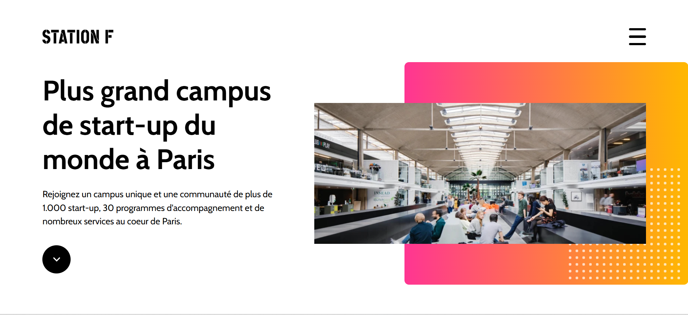
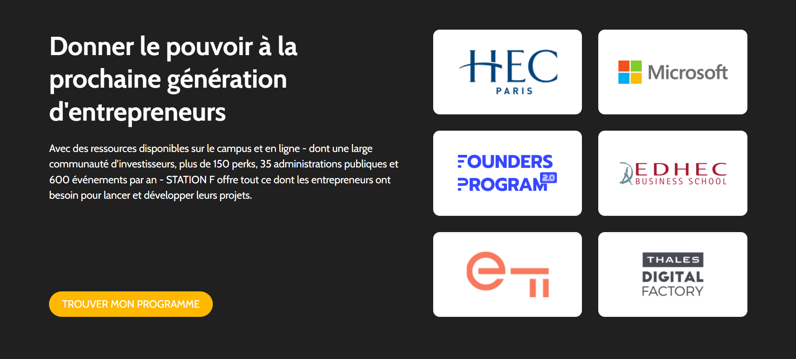
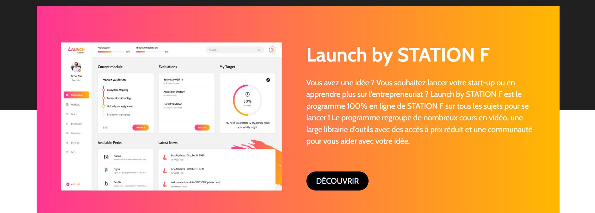

<div id="ajax-page" class="ajax-page-content">
    <div class="ajax-page-wrapper">
        <div class="ajax-page-nav">
            <div class="nav-item ajax-page-prev-next">
                <a class="ajax-page-load" href="portfolio-4.html"><i class="pe-7s-icon pe-7s-angle-left"></i></a>
                <a class="ajax-page-load" href="portfolio-6.html"><i class="pe-7s-icon pe-7s-angle-right"></i></a>
            </div>
            <div class="nav-item ajax-page-close-button">
                <a id="ajax-page-close-button" href="#"><i class="pe-7s-icon pe-7s-close"></i></a>
            </div>
        </div>

        <div class="ajax-page-title">
            <h1>Copie du Site Station F</h1>
        </div>

        <div class="row">
            <div class="col-sm-12 col-md-8 portfolio-block">
                <!-- Carousel des captures d'écran -->
                <div class="owl-carousel portfolio-page-carousel">
                    <div class="item">
                        
                    </div>
                    <div class="item">
                        
                    </div>
                    <div class="item">
                        
                    </div>
                </div>

                <!-- Site interactif -->
                <div class="portfolio-page-video" style="position: relative; padding-bottom: 60%; height: 0; overflow: hidden; min-height: 500px; margin-top: 20px;">
                <iframe class="embed-responsive-item" src="0/5- stationf copie/index.html" title="Copie du Site Station F" style="width: 100%; height: 80vh; border: 1px solid #ddd; border-radius: 5px; overflow: hidden;"></iframe>
                </div>


                                <script type="text/javascript">


                                    function customAjaxScroll() {


                                        var windowWidth = $(window).width();


                                        if (windowWidth > 991) {


                                            // Scroll personnalisé pour la page Ajax


                                            $("#ajax-page").mCustomScrollbar({


                                                scrollInertia: 8,


                                                documentTouchScroll: false


                                            });


                                        } else {


                                            $("#ajax-page").mCustomScrollbar('destroy');


                                        }


                                    }


                


                                    jQuery(document).ready(function($){


                


                                        customAjaxScroll();


                


                                    


                


                                        var carousel = $('.portfolio-page-carousel');


                


                                    


                


                                        // Ensure images and videos are loaded before initializing Owl Carousel


                


                                        carousel.imagesLoaded(function() {


                


                                            carousel.owlCarousel({


                


                                                smartSpeed: 1200,


                


                                                items: 1,


                


                                                loop: true,


                


                                                dots: true,


                


                                                nav: true,


                


                                                navText: false,


                


                                                margin: 10,


                


                                                autoHeight: true


                


                                            });


                


                                    


                


                                            // The carousel is now initialized, call positionNavArrows


                


                                            positionNavArrows();


                


                                        });


                


                                    


                


                                    


                


                                        function positionNavArrows() {


                


                                            var allMedia = carousel.find('.owl-item img, .owl-item video');


                


                                            if (allMedia.length === 0) return;


                


                                    


                


                                            var loadPromises = allMedia.map(function() {


                


                                                var deferred = $.Deferred();


                


                                                var element = this;


                


                                                


                


                                                var resolveHeight = function() {


                


                                                    var height = $(element).height();


                


                                                    deferred.resolve(height > 0 ? height : Infinity);


                


                                                };


                


                                    


                


                                                if (element.tagName === 'VIDEO') {


                


                                                    if (element.readyState >= 1) resolveHeight();


                


                                                    else $(element).on('loadedmetadata', resolveHeight).on('error', () => deferred.resolve(Infinity));


                


                                                } else { // IMG


                


                                                    if (element.complete) resolveHeight();


                


                                                    else $(element).on('load', resolveHeight).on('error', () => deferred.resolve(Infinity));


                


                                                }


                


                                                return deferred.promise();


                


                                            }).get();


                


                                    


                


                                            $.when.apply($, loadPromises).done(function() {


                


                                                var heights = [].slice.call(arguments).filter(h => h !== Infinity);


                


                                                if (heights.length > 0) {


                


                                                    var minHeight = Math.min.apply(null, heights);


                


                                                    if (minHeight > 0) {


                


                                                        var navTopPosition = minHeight / 2;


                


                                                        var navContainer = carousel.find('.owl-nav');


                


                                                        navContainer.css({


                


                                                            'top': navTopPosition + 'px',


                


                                                            'margin-top': '0',


                


                                                            'transform': 'translateY(-50%)'


                


                                                        });


                


                                                    }


                


                                                }


                


                                            });


                


                                        }


                


                                    


                


                                        // No need for carousel.on('initialized.owl.carousel') here as it's called after imagesLoaded


                


                                        // carousel.on('initialized.owl.carousel', function() {


                


                                        //     setTimeout(positionNavArrows, 100);


                


                                        // });


                


                                    


                


                                        var resizeTimeout;


                


                                        $(window).on('resize', function() {


                


                                            customAjaxScroll();


                


                                            clearTimeout(resizeTimeout);


                


                                            resizeTimeout = setTimeout(positionNavArrows, 250);


                


                                        });


                


                                    });


                                </script>
            </div>

            <div class="col-sm-12 col-md-4 portfolio-block">
                <!-- Description du projet -->
                <div class="block-title">
                    <h3>Description</h3>
                </div>
                <ul class="project-general-info">
                    <li><p><i class="fa fa-user"></i> David D'AMORE</p></li>
                    <li><p><i class="fa fa-globe"></i> <a href="https://github.com/davistres" target="_blank">github.com/davistres</a></p></li>
                    <li><p><i class="fa fa-calendar"></i> 2024</p></li>
                </ul>

                <p class="text-justify">Exercice de reproduction d'une partie du site web de Station F, le plus grand campus de startups au monde. Ce projet démontre ma capacité à analyser et reproduire fidèlement un design existant en utilisant HTML5 et CSS3. J'ai recréé trois sections principales du site en respectant la mise en page, les styles et l'aspect visuel de l'original, tout en assurant une compatibilité responsive.</p>


                <!-- Technologies -->
                <div class="tags-block">
                    <div class="block-title">
                        <h3>Technologie</h3>
                    </div>
                    <ul class="tags">
                        <li><a>HTML5</a></li>
                        <li><a>CSS3</a></li>
                        <li><a>Responsive Design</a></li>
                        <li><a>Intégration Web</a></li>
                    </ul>
                </div>


                <!-- Boutons de partage -->
                <div class="btn-group share-buttons">
                    <div class="block-title">
                        <h3>Partage</h3>
                    </div>
                    <a href="https://www.linkedin.com/in/david-d-amore-362307107/" target="_blank" class="btn"><i class="fa fa-linkedin"></i> </a>
                    <a href="https://github.com/davistres" target="_blank" class="btn"><i class="fa fa-github"></i> </a>
                </div>
            </div>
        </div>
    </div>
</div>
